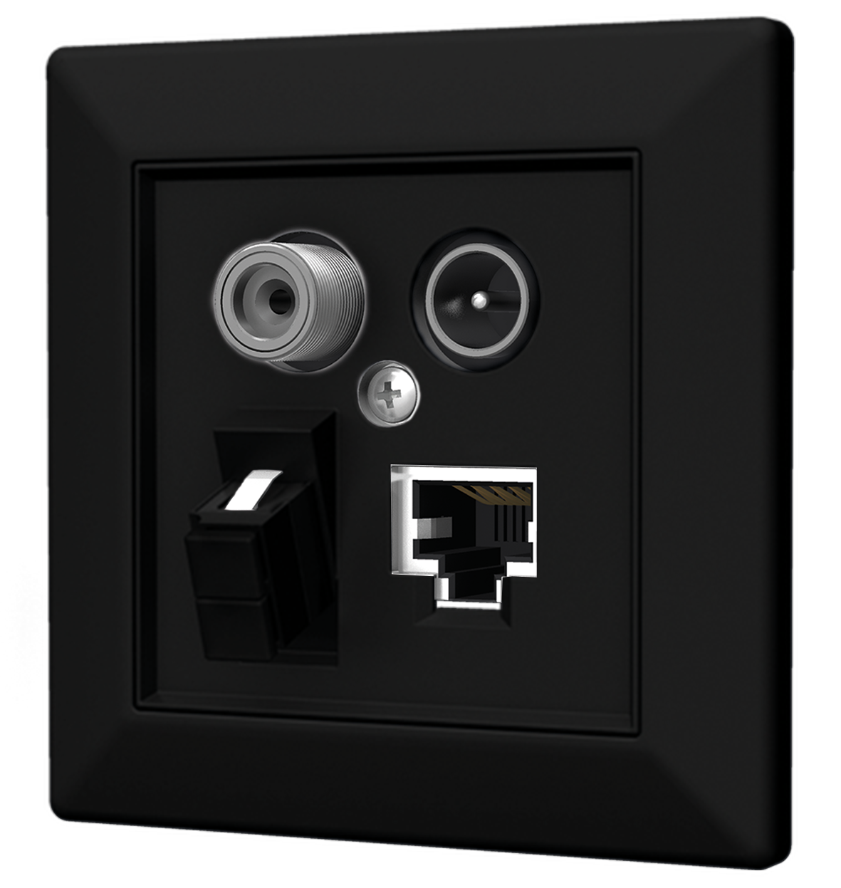
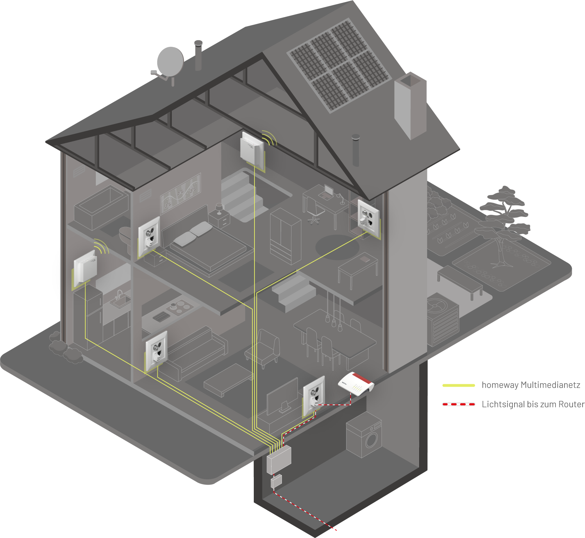
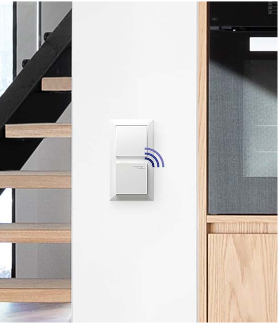
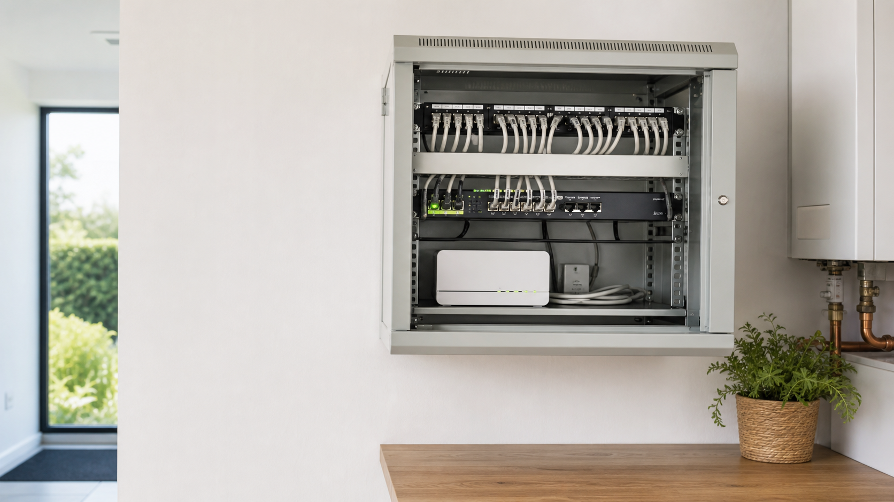
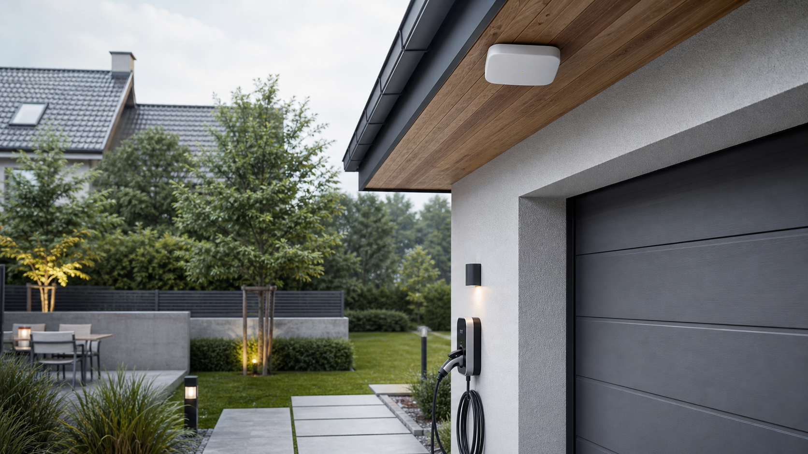
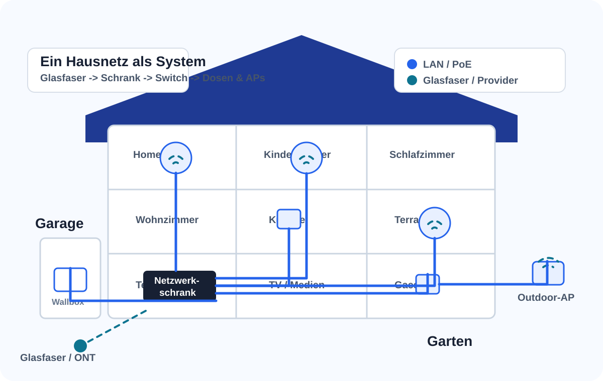
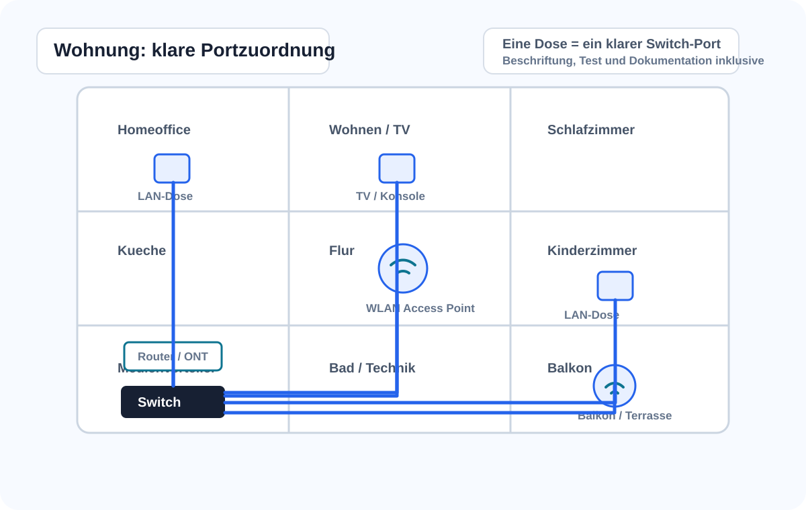
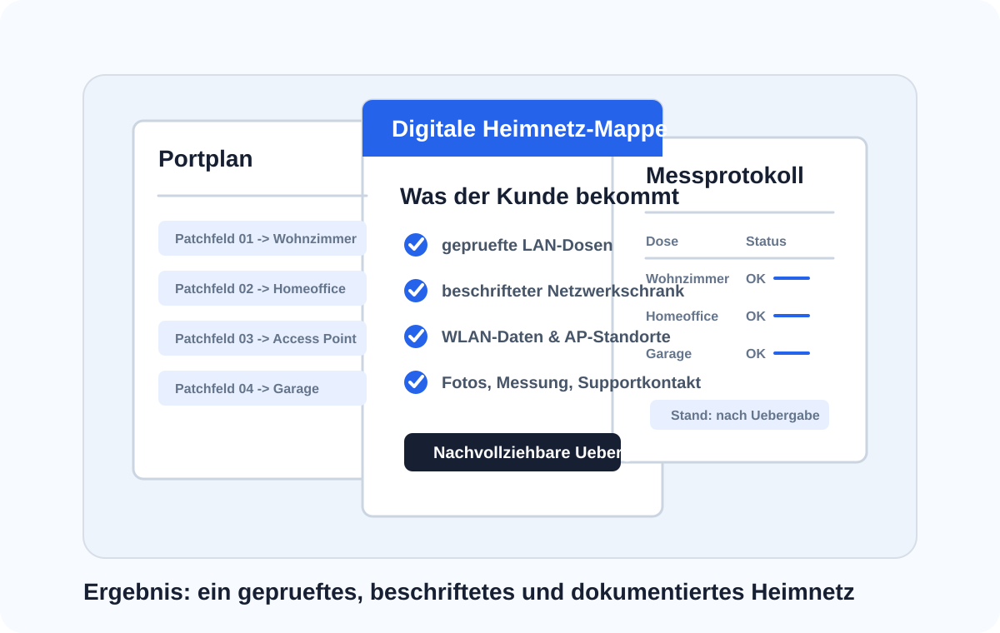

HomeWay-Dosen
Modulare Anschlusslösungen für Netzwerk, TV, Glasfaser und spätere Nutzung.
Wien · Niederösterreich · Burgenland
Für Neubau, Sanierung, Wohnung, Einfamilienhaus sowie kleine Büros, Praxen, Ordinationen und Kanzleien: Beratung & Technik plant HomeWay und digitale Infrastruktur, koordiniert mit dem Elektriker und richtet Netzwerkschrank, Switch, Router, Access Points und Dokumentation ein.
Der Elektriker verlegt die Leitungen - Beratung & Technik macht daraus ein funktionierendes Heimnetz.

Probleme, die wir lösen
Dosen sind vorhanden, aber im Raum kommt nichts an. Wir prüfen, patchen, beschriften und aktivieren.
ONT und Router sind da, aber der richtige Standort und die Verteilung über Switch und Dosen fehlen.
Obergeschoss, Keller, Garten oder Garage sind schlecht versorgt. Wir planen Access Points statt Repeater-Chaos.
Empfang, Behandlungsraum, Besprechung, Gäste-WLAN, Drucker, NAS oder Kameras brauchen ein kleines, aber sauberes Netzwerk.
Komponenten
Die bestehenden HomeWay-/WLAN-Bilder werden mit eigenen, markenfreien Projektbildern kombiniert.

Modulare Anschlusslösungen für Netzwerk, TV, Glasfaser und spätere Nutzung.

Access Points werden dort geplant, wo das Signal wirklich gebraucht wird.

Switch, Router, PoE, Patchfeld, Beschriftung und Dokumentation als zentrale Basis.
Projektbereiche
Glasfaser, Netzwerkschrank, Access Points und Außenbereiche werden als ein System geplant, damit später keine Insellösungen entstehen.

ONT, Providergerät, Switch und Patchfeld sinnvoll verbinden und dokumentieren.

WLAN, Wallbox, Kameras, Torsteuerung oder Gartenhaus bei der Netzplanung berücksichtigen.
Was Sie bekommen
Diese schematischen Eigenillustrationen zeigen, wie die Planung gedacht ist: vom Provideranschluss über den Netzwerkschrank bis zu Dosen, Access Points und der dokumentierten Übergabe.

Glasfaser, Switch, PoE, Access Points, Garage und Garten werden als zusammenhängendes Netz geplant.

Jede Dose bekommt eine nachvollziehbare Zuordnung zu Raum, Patchfeld und Switch-Port.

Portplan, WLAN-Daten, Messprotokoll, Fotos und Supportkontakt bleiben nachvollziehbar.
Pakete
Endpreise werden nach Besichtigung und Materialauswahl angeboten. Material und Elektrikerleistungen werden sauber getrennt.
Vor-Ort-Analyse von Router, Glasfaser, LAN-Dosen, WLAN und Verteiler. Ergebnis: Empfehlung und Umsetzungsplan.
Hauslösung mit Netzwerkschrank, Switch, Router/ONT, 2-4 Access Points, Messung, Beschriftung und Dokumentation.
WLAN-Analyse, Access-Point-Plan, UniFi/Omada/HomeWay/AVM je nach Bedarf und Gäste-WLAN optional.
LAN-Dosen aktivieren, Netzwerkschrank einrichten, Patchpanel/Switch/Router verbinden und beschriften.
LAN, WLAN, Gäste-WLAN, Drucker/NAS und kleine Office- oder Praxisbereiche strukturiert einrichten.
Netzwerk für Doorbell, Kameras, Garage, Garten, PoE und Smart-Home-Anwendungen vorbereiten.
Ablauf
Am Ende erhalten Sie nicht nur funktionierendes WLAN, sondern eine nachvollziehbare Struktur.
Bestand, Pläne, Verteiler, Dosen, Glasfaser/ONT, Router und WLAN-Situation prüfen.
Materialliste, Paketoptionen, Elektriker-Abgrenzung und Terminplanung festlegen.
Switch, Router, PoE, Access Points, Dosen, Messung und Beschriftung umsetzen.
Portplan, WLAN-Daten, Fotos, Hinweise und Supportkontakt dokumentieren.
Technologien
Modulare Anschlusslösung für Netzwerk, TV, Glasfaser und dezente WLAN-Module.
Gateway, Switch, PoE, Access Points und Protect optional für anspruchsvolle Heimnetze.
Preis-Leistungs-Alternative für Access Points, Switches, kleine Büros und Praxisräume.
Access Points sauber über LAN/PoE statt Steckernetzteil und Repeaterkette.
Starten Sie mit einem CONNECT CHECK für Ihr Objekt in Wien, Niederösterreich oder Burgenland.